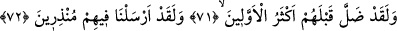
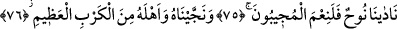
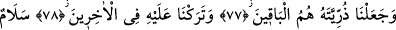
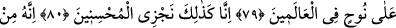
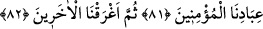
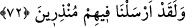

NUH BİZE YALVARIP YAKARDI
71. Andolsun ki, onlardan önce eski milletlerin çoğu dalâlete düştü.
72. Kuşkusuz, biz onlara uyarıcılar göndermiştik.
73. Uyarılanların âkıbetinin ne olduğuna bir bak!
74. Allah’ın ihlâslı kulları müstesna.
75. Andolsun, Nuh bize yalvarıp yakardı. Biz de duayı ne güzel kabul ederiz!
76. Kendisini ve ailesini büyük felâketten kurtardık.
77. Biz yalnız Nuh’un soyunu kalıcı kıldık.
78. Sonradan gelenler içinde ona iyi bir nam bıraktık
79. Bütün âlemlerde Nuh’a selâm olsun!
80. İşte biz iyileri böyle mükâfatlandırırız.
81. Zira o, bizim inanmış kullarımızdan idi.
82. Nihâyet ötekileri (inanmayanları) suda boğduk.
“Andolsun ki, onlardan” senin kavmin olan Kureyş’ten “önce eski milletlerin çoğu
dalâlete düştü” yani şeytan onları saptırdı. Burada sözün akışından anlaşıldığı için
şeytan ismi açıkça zikredilmemiş yalnızca işaretle yetinilmiştir.
72. Kuşkusuz, biz onlara uyarıcılar göndermiştik.
“Kuşkusuz, biz onlara” içinde bulundukları halin bâtıl olduğunu onlara beyan edip bu
durumun vahim âkibetinden onları uyaran “uyarıcılar” yani nice şânı yüce
peygamberler “göndermiştik.”